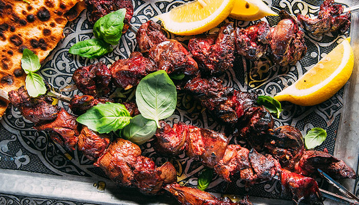

￩ Back to Homepage
Persian Grilled Lamb's Liver (Jigar Kababi)

Description
This classic Persian grilled lamb's liver (Jigar Kababi) is a simple,
delicious, and incredibly popular dish in Iran. It's often preferred over
the pan-fried version for its smoky flavor and easy preparation. Rich in
iron, it's a fantastic choice for a nutritious and flavorful meal cooked
right on the grill.
- Servings: 4-6
- Prep time: 15 minutes
- Cook time: 10 minutes
Ingredients
Note: this recipe yields 4-6 servings
- 1 lb (about 500g) lamb's liver
- 1 large onion, thinly sliced
- 1 tablespoon fresh lemon juice
- Salt and freshly ground black pepper to taste
Steps
-
Rinse the liver under cold water and pat dry with paper towels. Cut it
into uniform, bite-sized cubes, about 1-inch pieces. Be sure not to cut
them too small as they may fall off the skewers.
-
In a large bowl, combine the liver cubes, sliced onion, lemon juice,
salt, and pepper. Mix well to ensure the liver is evenly coated with the
marinade.
-
Cover the bowl with plastic wrap and refrigerate for at least 1 hour to
allow the flavors to meld and the liver to become tender.
-
Remove the mixture from the refrigerator. Thread the liver pieces onto
metal or pre-soaked wooden skewers. You can discard the onion slices or
alternate them with the liver pieces on the skewers if you enjoy grilled
onion.
-
Preheat your grill to a medium heat. Place the skewers on the grill and
cook for about 3-5 minutes per side, or until cooked through but still
tender. Be careful not to overcook, as liver can become tough and dry
very quickly.
-
Serve immediately with fresh bread (like flatbread), grilled tomatoes,
and fresh herbs.